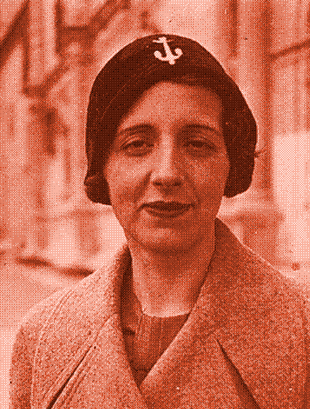

María Zambrano und die Grenzen der Vernunft

Die Philosophin María Zambrano stammte wie ich aus Málaga. Nach Francos Sieg und dem Beginn der Diktatur ging sie 1939 ins Exil. Sie kehrte erst 1984 zurück. Fünfundvierzig Jahre außerhalb Spaniens: Frankreich, Mexiko, Kuba, Italien. Sie war in der europäischen Philosophie ihrer Zeit ausgebildet worden, die der Vernunft vertraute, der Methode, der Fähigkeit, alles mit Präzision erklären zu können. Und dann lebte sie das Exil. Aus dieser Spannung wuchs die poetische Vernunft.
Zambrano schlug die poetische Vernunft als einen Weg vor, über die strenge Logik hinaus zu denken. Nicht gegen die Vernunft, sondern jenseits ihrer reduziertesten und demonstrativsten Version. Eine Art zu denken, die nicht alles in geschlossene Definitionen verwandeln muss und die mit dem auskommt, was sich nicht einordnen lässt.
„In der Philosophie findet sich nicht der ganze Mensch; in der Poesie findet sich nicht die Gesamtheit des Menschlichen."
In diesem Rahmen erscheint die Metapher nicht als Ornament, sondern als Tool for Thought. Wenn Zambrano über das Exil schreibt und es eine Wunde nennt, benutzt sie kein literarisches Mittel. Sie sagt etwas, das nur so gesagt werden kann. Das Bild öffnet einen Zugang zu einer Erfahrung, den rein begriffliche Sprache nicht erreicht.
Mit poetischer Vernunft zu denken bedeutet anzuerkennen, dass das, was wir fühlen, ahnen oder noch nicht zu erklären wissen, auch zum Denken gehört. Es bedeutet, die Philosophie ans Leben heranzulassen, ohne es zu zähmen, das Offene offenzulassen.
Mehr als eine Alternative zur Vernunft ist sie eine Erinnerung: Nicht alles löst sich durch Klarheit und Methode. Wir denken auch, wenn wir in Bildern sprechen, wenn wir Unabgeschlossenes teilen, wenn wir Worte begleiten statt sich durchsetzen lassen.
Im Kern geht es darum: Es gibt Arten, sich zu verstehen, die keine Erklärung brauchen. Dass man etwas hält, ohne es aufzulösen, ist keine Schwäche des Denkens. Es ist eine andere Art zu denken.